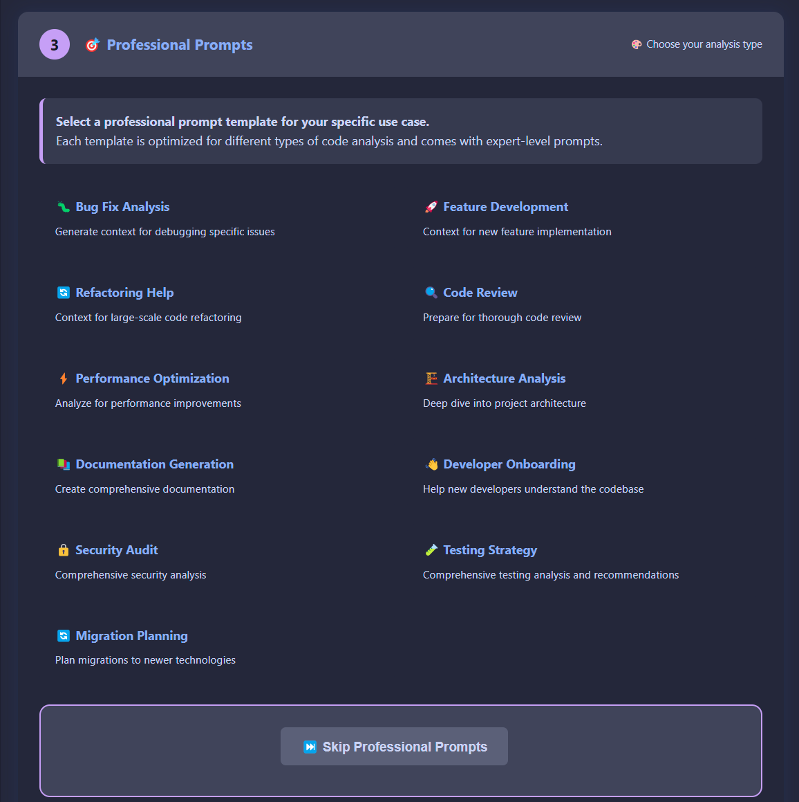
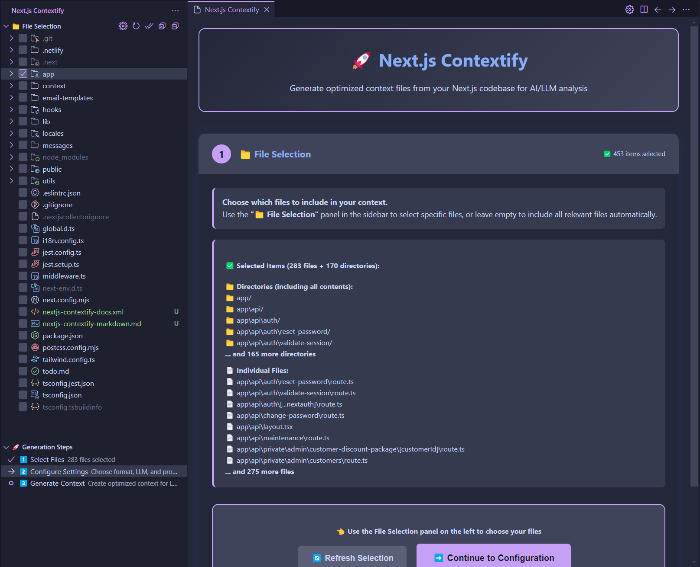
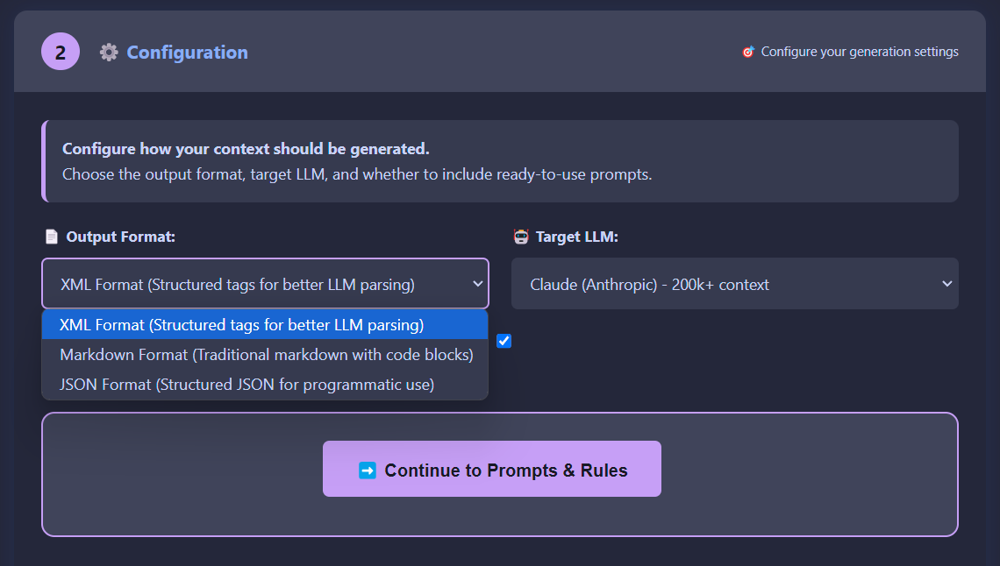
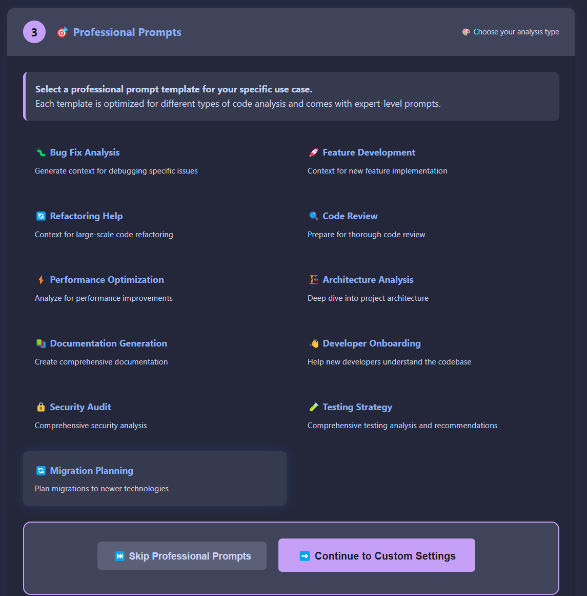
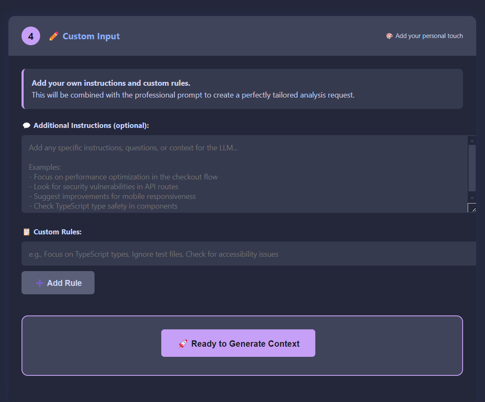

nextjs-contextify
Next.js Contextify
A powerful VS Code extension that generates comprehensive context files from your Next.js codebase for optimal use with Large Language Models (LLMs) like ChatGPT, Claude, and others.
🯠Now with Professional Step-by-Step UI and 12 Expert Prompt Templates!
 Initial file selection interface with step-by-step guidance and empty selection state
Initial file selection interface with step-by-step guidance and empty selection state
🚀 Features
🨠Modern Step-by-Step UI
- Interactive Step Wizard - guided 5-step process for perfect context generation
- Activity Bar Integration - dedicated panel in VS Code sidebar
- File Selection Tree - visual file picker with checkboxes
- Real-time Progress - see your progress through each step
- Professional Templates - 12 expert-crafted prompt templates
🯠Professional Prompt Templates
Choose from 12 specialized templates for different use cases:
Development & Implementation
- 🛠Bug Fix Analysis - Debug issues and identify problems
- 🚀 Feature Development - Plan and implement new features
- 🔄 Refactoring Help - Large-scale code improvements
Analysis & Review
- 🔠Code Review - Comprehensive code quality analysis
- ⚡ Performance Optimization - Speed and efficiency improvements
- 🏗️ Architecture Analysis - Deep architectural insights
Documentation & Communication
- 📚 Documentation Generation - Create comprehensive docs
- 👋 Developer Onboarding - Help new team members
Specialized Analysis
- 🔒 Security Audit - Security vulnerability assessment
- 🧪 Testing Strategy - Testing approach and coverage
- 🔄 Migration Planning - Technology migration assistance
 12 expert-crafted prompt templates organized in a clean grid layout for easy selection
✨ Latest Next.js Support (v15+)
- App Router prioritization with intelligent file categorization
- Server Components and Client Components detection
- Support for all App Router conventions (
layout,page,loading,error,not-found,template,global-error) - Route Handlers (
route.ts/js) detection - Middleware support
🯠Smart File Prioritization
Files are intelligently categorized and prioritized for optimal LLM processing:
-
A: Core Configurations (Priority 80-100)
- Next.js config files (
next.config.js/ts/mjs) - Package configuration (
package.json) - TypeScript/JavaScript config
- Styling configuration (Tailwind, etc.)
- Middleware
- Next.js config files (
-
B: App Router Structure (Priority 60-80)
- Layouts, pages, loading states
- Error boundaries and templates
- API routes in app directory
-
C: Pages Router Structure (Priority 68-78)
_app,_document,_error- API routes in pages directory
- Custom error pages (404, 500)
-
D: Components (Priority 50-55)
- Client components (
'use client') - Server components
- UI components
- Client components (
-
E: Hooks & Utilities (Priority 45-48)
- Custom hooks
- Utility functions and libraries
-
F: Data Layer (Priority 40-42)
- State management (Redux, Zustand, Context)
- Database schemas and migrations
-
G: Styling (Priority 30-35)
- Global styles and component styles
-
H: Other Files (Priority 10-25)
- TypeScript/JavaScript files
- Configuration files
- Documentation
🨠Multiple Output Formats
- XML Format - Structured tags for better LLM parsing
- Markdown Format - Traditional markdown with code blocks
- JSON Format - Structured data for programmatic use
🯠Custom User Input
- Personal Instructions - Add your own analysis requirements
- Custom Rules - Define specific focus areas
- Combined Output - Professional templates + your custom input
🛡️ Enhanced Ignore Patterns
Comprehensive default ignore patterns for modern Next.js development:
- Build outputs:
.next/,.swc/,out/,build/,dist/,.turbo/ - Dependencies:
node_modules/ - Environment:
.env*files - Lock files: All package manager lock files (
package-lock.json,yarn.lock,pnpm-lock.yaml,bun.lockb) - Media files: Images, fonts, audio, video
- Development tools: Coverage reports, logs, temporary files
- AI IDEs:
.cursor/,.windsurf/configurations
📊 Rich Context Output
- Token usage estimation with LLM-specific limits
- File statistics and metadata
- Progress indicators during generation
- Structured output with categories and priorities
🔧 Installation
Option 1: Install from VSIX File
- Download the latest
.vsixfile from the releases - Open VS Code
- Press
Ctrl+Shift+P(orCmd+Shift+Pon Mac) to open Command Palette - Type
Extensions: Install from VSIX... - Select the downloaded
.vsixfile - Restart VS Code if prompted
Option 2: Manual Installation
- Clone and build from source:
git clone https://github.com/hongkongkiwi/nextjs-contextify
cd nextjs-contextify
pnpm install
pnpm run build
pnpm run package
code --install-extension nextjs-contextify-*.vsix
📦 Building and Packaging
Creating VSIX Files
To create a distributable VSIX package:
-
Install Dependencies:
pnpm install -
Build the Extension:
pnpm run build -
Create VSIX Package:
pnpm run packageThis creates a
nextjs-contextify-X.X.X.vsixfile in the root directory. -
Alternative Package Commands:
# Install and package locally for testing
pnpm run package:install
# Run full CI pipeline (lint, test, package)
pnpm run ci
Installing VSIX Files
Method 1: VS Code GUI
- Open VS Code
- Go to Extensions view (
Ctrl+Shift+X) - Click the
...menu in the Extensions view - Select
Install from VSIX... - Choose your
.vsixfile
Method 2: Command Line
code --install-extension nextjs-contextify-2.1.1.vsix
Method 3: Command Palette
- Press
Ctrl+Shift+P(Windows/Linux) orCmd+Shift+P(Mac) - Type
Extensions: Install from VSIX... - Select your
.vsixfile
Development Setup
For development and testing:
# Clone the repository
git clone https://github.com/hongkongkiwi/nextjs-contextify
cd nextjs-contextify
# Install dependencies
pnpm install
# Build the extension
pnpm run build
# Package for distribution
pnpm run package
# Install locally for testing
pnpm run package:install
# Run linter
pnpm run lint
# Run tests
pnpm run test
# Run full CI pipeline
pnpm run ci
📖 Usage
Step-by-Step UI (Recommended)
- Open your Next.js project in VS Code
- Click the Next.js Contextify icon in the Activity Bar
- Follow the 5-step guided process:
Step 1: File Selection
- Use the 📠File Selection panel to choose specific files
- Or leave empty for automatic smart selection
- See real-time file count and selection status
 File selection interface showing 453 selected items with detailed breakdown of directories and individual files
 Comprehensive view of selected files and directories with expandable lists and item counts
Comprehensive view of selected files and directories with expandable lists and item counts
Step 2: Configuration
- Choose output format (XML/Markdown/JSON)
- Select target LLM (Claude/GPT/Gemini/Custom)
- Enable/disable ready-to-use prompts
 Configuration interface with output format selection and target LLM options
 Dropdown menu showing all available target LLM options including Claude, ChatGPT, Gemini, and Custom
Dropdown menu showing all available target LLM options including Claude, ChatGPT, Gemini, and Custom
Step 3: Professional Prompts
- Browse 12 expert-crafted templates
- Select the one matching your use case
- Or skip for custom-only analysis
 Professional prompts interface with selected Migration Planning template and continue option
Step 4: Custom Input
- Add your specific instructions
- Define custom analysis rules
- Combine with professional templates
 Custom input step allowing personal instructions and custom rules for tailored analysis
Step 5: Generate
- Generate your optimized context file
- Copy directly to clipboard
- View token usage statistics
Quick Generation (Command Palette)
- Next.js Contextify: Quick Generate - Fast XML generation with defaults
- Next.js Contextify: Generate Context - Classic step-by-step wizard
- Next.js Contextify: Generate with LLM Prompts - Quick prompt selection
Custom Ignore Patterns
Create a .nextjscollectorignore file in your project root:
# Custom ignore patterns
*.test.ts
*.spec.js
/cypress/
/playwright/
custom-folder/
specific-file.ts
🯠Perfect for LLM Interactions
Professional Use Cases
- 🛠Debugging - Get expert help finding and fixing bugs
- 🚀 Feature Development - Plan new features with architectural guidance
- 📚 Documentation - Generate comprehensive project documentation
- 🔠Code Reviews - Thorough analysis with specific recommendations
- ⚡ Performance - Identify optimization opportunities
- 🔒 Security - Vulnerability assessment and fixes
- 🧪 Testing - Improve test coverage and strategy
- 🔄 Migrations - Plan technology upgrades and migrations
Output Examples
Generated files include:
- Context: Prioritized file contents with metadata
- Professional Prompts: Expert-level analysis requests
- Token Estimates: LLM-specific usage calculations
- Project Structure: Visual directory tree
- Instructions: Ready-to-paste LLM prompts
🔄 Recent Updates & Changelog
v2.1.1 (2024-06-16) - Critical Bug Fixes
- 🔧 Parent-Child Selection Fix - Fixed child directories not being deselected when parent is deselected
- 📠Recursive Directory Handling - Improved recursive selection/deselection of nested directories
- 🔄 Tree View Synchronization - Better checkbox state management for directory hierarchies
- 📊 Enhanced Logging - Better debugging for directory selection operations
v2.1.0 - Previous Updates
- 🔧 Selection Sync Fix - Fixed UI not updating when all files are deselected
- ✅ Empty State Handling - Proper "no files selected" display when selection is cleared
- 🔄 Event Propagation - Improved event handling between Tree View and UI
Recent Enhancements (Unreleased)
- 🚀 Automated CI/CD Pipeline - GitHub workflows for building, testing, and publishing
- 📦 Enhanced Package Scripts - Development workflow improvements with pnpm support
- 🔧 Repository Migration - Updated from
sriemtohongkongkiwiownership - 📠Publishing Infrastructure - Automated publishing to VS Code Marketplace and Open VSX Registry
- ⚙️ Smart Environment Detection - Publishes only when required secrets are configured
- ğŸ› ï¸ Improved Build Process - Enhanced ESLint configuration and build reliability
🚀 Quick Start for Developers
Clone and Setup
git clone https://github.com/hongkongkiwi/nextjs-contextify
cd nextjs-contextify
pnpm install
Development Workflow
# Start development (watch mode)
pnpm run dev
# Lint code
pnpm run lint
# Build extension
pnpm run build
# Package for testing
pnpm run package
# Install locally for testing
pnpm run package:install
# Run full CI pipeline
pnpm run ci
# Quick CI (no tests)
pnpm run ci:fast
Testing Extension
- Run
pnpm run package:install - Press
F5in VS Code to launch Extension Development Host - Open a Next.js project in the new window
- Click the Next.js Contextify icon in the Activity Bar
Debugging
- Use VS Code's built-in debugger with the included
launch.json - Console logs appear in VS Code's Developer Tools
- Extension logs appear in Output panel → "Extension Host"
📠Project Structure
├── src/extension.ts # Main extension code (2,673 lines - needs refactoring!)
├── .github/workflows/ # CI/CD automation
├── media/ # Screenshots and images
├── images/ # Extension icon
└── README.md # Main documentation
ğŸ› ï¸ Development
Prerequisites
- Node.js 22.15.0+ (required)
- pnpm (latest)
- VS Code 1.85.0+
Setup
git clone https://github.com/hongkongkiwi/nextjs-contextify
cd nextjs-contextify
pnpm install
Development Commands
# Build the extension
pnpm run build
# Watch mode for development
pnpm run watch
# Run linter
pnpm run lint
# Fix linting issues
pnpm run lint:fix
# Run tests
pnpm run test
# Package extension
pnpm run package
# Install packaged extension locally
pnpm run package:install
# Run full CI pipeline (lint + test + package)
pnpm run ci
# Run fast CI pipeline (lint + package, skip tests)
pnpm run ci:fast
🔧 CI/CD Workflows: For detailed information about our automated testing, building, and publishing workflows, see Workflow Documentation.
Release Commands
# Patch release (2.1.1 → 2.1.2)
pnpm run release
# Minor release (2.1.1 → 2.2.0)
pnpm run version:minor
# Major release (2.1.1 → 3.0.0)
pnpm run version:major
# Publish to marketplaces (manual)
pnpm run publish:vscode # VS Code Marketplace only
pnpm run publish:openvsx # Open VSX Registry only
pnpm run publish:all # Both marketplaces
# Release and publish in one command
pnpm run release:publish
🤠Contributing
Contributions are welcome! Please feel free to submit a Pull Request.
Getting Started with Development
Prerequisites
- Node.js 22.15.0 or higher
- pnpm (latest version)
- VS Code 1.85.0 or higher
Development Setup
# Clone the repository
git clone https://github.com/hongkongkiwi/nextjs-contextify
cd nextjs-contextify
# Install dependencies
pnpm install
# Start development
pnpm run dev
Testing Your Changes
# Build the extension
pnpm run build
# Package for testing
pnpm run package
# Install locally
pnpm run package:install
# Run tests
pnpm run test
# Run linter
pnpm run lint
Development Guidelines
Code Style
- Use TypeScript for all new code
- Follow ESLint configuration
- Add JSDoc comments for public APIs
- Use meaningful variable and function names
Testing
- Add unit tests for new services
- Add integration tests for UI components
- Ensure all tests pass before submitting PR
Commit Messages
Follow conventional commits:
feat: add new prompt template for debugging
fix: resolve file selection memory leak
docs: update README with new features
test: add unit tests for FileScanner
Bug Reports
When reporting bugs, include:
- VS Code version
- Extension version
- Node.js version
- Steps to reproduce
- Expected vs actual behavior
- Error messages or logs
- Sample project structure (if relevant)
Feature Requests
For new features:
- Check existing issues first
- Describe use case and benefits
- Consider implementation complexity
- Provide mockups/examples if applicable
Priority Areas for Contribution
- Code Refactoring: Help break down the large extension.ts file
- Testing: Add comprehensive test coverage
- Performance: Optimize for large codebases
- Documentation: Improve guides and examples
- UI/UX: Enhance the webview interface
Pull Request Process
- Fork the repository
- Create a feature branch (
git checkout -b feature/amazing-feature) - Make your changes
- Add tests if applicable
- Run the full CI pipeline (
pnpm run ci) - Commit changes (
git commit -m 'feat: add amazing feature') - Push to branch (
git push origin feature/amazing-feature) - Open a Pull Request
PR Requirements
- [ ] Code builds successfully
- [ ] Tests pass
- [ ] Linting passes
- [ ] Documentation updated
- [ ] CHANGELOG updated if applicable
Architecture Goals
When contributing code, keep these principles in mind:
- Modularity: Break down large functions/classes
- Testability: Write code that can be easily tested
- Performance: Consider impact on large codebases
- User Experience: Prioritize intuitive, responsive UI
- Maintainability: Use clear, self-documenting code
Recognition
Contributors will be:
- Listed in project acknowledgments
- Mentioned in release notes
- Given appropriate credit in documentation
Getting Help
- Open an issue for questions
- Join discussions in existing issues
- Contact maintainers for complex contributions
📋 Requirements
- VS Code 1.85.0 or higher
- Node.js 22.15.0 or higher
- Next.js project (works with any version, optimized for 13+)
🛠Known Issues
- Very large codebases (10,000+ files) may take longer to process
- Binary files are automatically skipped to prevent corruption
📄 License
MIT License - see LICENSE file for details.
👤 Author
Andy Savage
- GitHub: @hongkongkiwi
- LinkedIn: andysavage
Andy McCormack
- GitHub: @hongkongkiwi
🯠Professional Prompt Templates Detail
Development & Implementation
- 🛠Bug Fix Analysis: Systematic debugging approach with root cause analysis
- 🚀 Feature Development: Architectural planning for new features
- 🔄 Refactoring Help: Strategic code improvement and modernization
Analysis & Review
- 🔠Code Review: Comprehensive quality assessment with SOLID principles
- ⚡ Performance Optimization: Core Web Vitals and rendering optimization
- 🏗️ Architecture Analysis: Scalability and maintainability evaluation
Documentation & Communication
- 📚 Documentation Generation: Professional README, API docs, and guides
- 👋 Developer Onboarding: Team integration and knowledge transfer
Specialized Analysis
- 🔒 Security Audit: OWASP Top 10 compliance and vulnerability assessment
- 🧪 Testing Strategy: Test pyramid approach and quality gates
- 🔄 Migration Planning: Technology upgrade roadmaps and risk assessment
🙠Acknowledgments
- Next.js team for the amazing framework
- VS Code team for the excellent extension API
- The developer community for feedback and contributions
- AI/LLM providers for inspiring better developer tools
â Star this repo if you find it helpful!
Transform your Next.js codebase into AI-ready context with professional prompts and intelligent analysis.